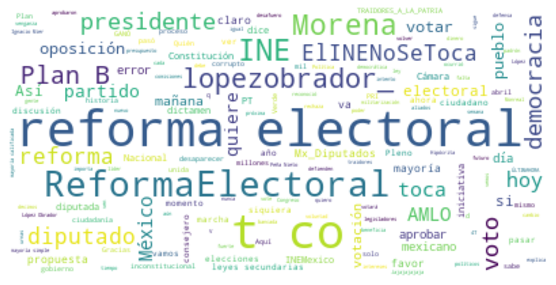
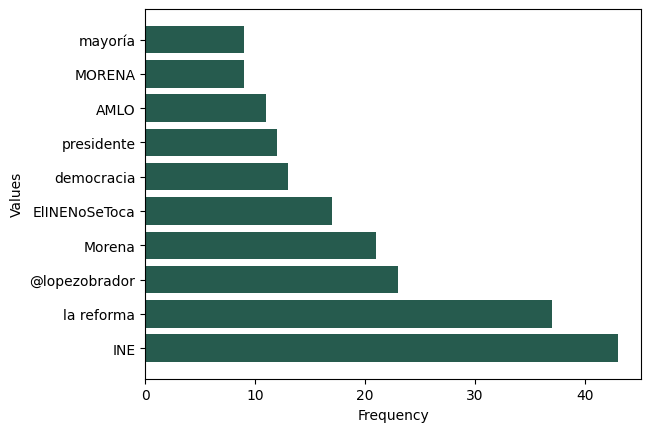
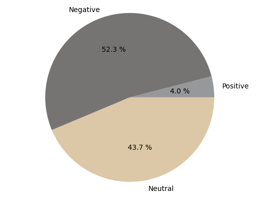
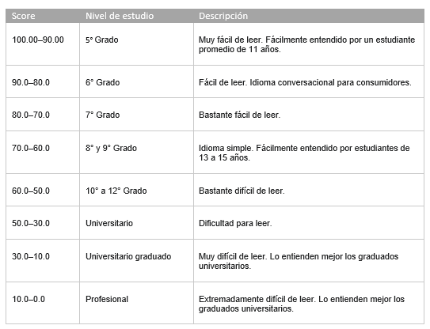
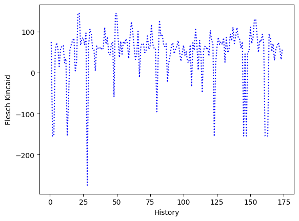

Temática: Reforma electoral
El reporte muestra los resultados de la escucha social para tendencias en redes sociales.
Se analiza la información que los usuarios de las redes sociales intercambian en el espacio cibernético de Twitter a nivel nacional, para conocer . Los datos consultados son de índole público y los estadísticos generados a partir de su análisis tienen como intención el uso privado.
Nube de Palabras
Una nube de palabras o nube de etiquetas es una representación visual de las palabras que conforman un texto, en donde el tamaño es mayor para las palabras que aparecen con más frecuencia y consecuentemente se disminuye su tamaño dado su valor.

En la imagen anterior se muestra la nube de palabras generada por la temática representada en este informe, en donde se observa una inclinación hacia la alternativa de la reforma y la oposición de la misma.
Frecuencia de palabras clave
La identificación de palabras clave obtiene la idea principal dentro de las sentencias que conforman a la opinión pública y las agrupa para mostrarnos su valor acumulado.

Observando el valor acumulado de las palabras clave se aprecia un incidente mayor directamente hacia los principales sustantivos que describen a la reforma electoral y la oposición a la misma.
Análisis de setimientos
El proceso de analizar la polarización sentimental implica identificar qué tipo de sentimientos se están generando dentro de la información procesada, yendo de un umbral de Positivo a Neutral y por último a Negativo, dependiendo de palabras clave en la redacción y la intención semántica identificada.

En el gráfico anterior se presenta el resumen de la orientación sentimental que presentó la opinión pública acerca de la temática presentada por este reporte, donde se puede observar que el sentimiento negativo predomina hacia la reforma electoral, dando a conocer una clara oposición, seguida de un sentimiento neutral el cual no demuestra un apoyo directo, sino, simplemente un discurso informativo y en su parte más pequeña un claro apoyo a la reforma.
Legibilidad
La legibilidad de un texto hace referencia a la facilidad con la que este puede ser leído para su posterior compresión, La prueba otorga al texto un valor dentro de una escala de puntos. Cuanto más elevado sea el resultado, más fácil será comprender el documento.
Para la mayoría de los documentos estándar, el objetivo es un resultado comprendido entre 60 y 70 aproximadamente.


Con referencia a la anterior imagen se puede observar una oscilación de los resultados de legibilidad dentro de la opinión pública, aunque algunos están en un intervalo del promedio ideal, existe una oscilación hacia valores negativos, lo que indica que existen comentarios los cuales no reflejan una estructura argumental bien articulada para su compresión.
Interpretación general
Revisando los resultados anteriores se puede concluir que la opinión pública desaprueba mayoritariamente la aceptación de la reforma electoral, sin embargo los argumentos que utilizan dentro de su redacción no terminan siendo claros para su interpretación y a pesar de que no hay un dominio positivo del sentimiento si existe una contraparte neutral que se puede rectificar en la nube de palabras y las frecuencias de las ideas donde se visualiza la incidencia de las temáticas del plan B.